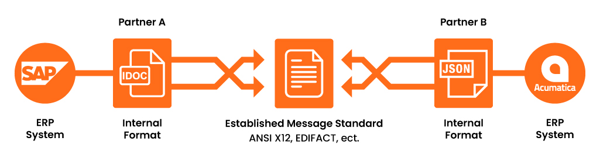
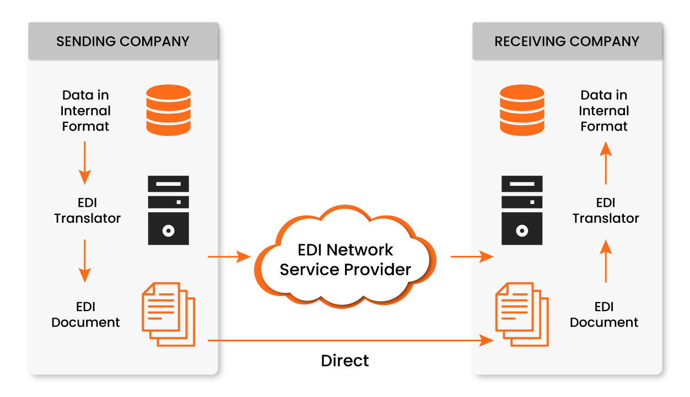

Have we ever thought of a world with no paper? But in the meantime, we are evolving in a space where pens fade with the increasing amount of digital signatures. Eventually, businesses have also evolved with tech-savvy trends. And all of them have been a great modification to the traditional methods. Where Electronic Data Interchange (EDI) is an automated process between two business applications that are majorly involved in data transferring.
I guess now you understand why the need for paperwork is dropping. And with that here in the blog let us explore what EDI is and get through to know more things in detail about EDI Integration, its working, and Future.
Briefing On Electronic Data Interchange
The EDI technology on a simple note can be put as the process where business documents are made electronically and transacted between two companies for easy access. This is a quick-fix integration helping companies and businesses, conveniently interact with each other in electronic formats. The process is more efficient as EDI cut down costs, and no more paper copies and faxes.
The Electronic Data Interchange integration Technology kickstarted in the late 1960 and it was all over in the U.S by 1990. EDI we could say from there took its peak to gathering global attention as businesses get global exposure and its adoption for its cost-effective process.
In this era, EDI has evolved almost to get its name stamped in every sector allowing businesses and organizations to transact data electronically with suppliers, customers, and others. EDI users are more convenient to carry forward their activities virtually with no hassle and anticipate the best future procedures. This is because, EDI removes paperwork, increases efficiency at the operational levels, smoothie enhances virtual exchange with new partners, and all together effortlessly.
The methodology of getting intercompany communication of business documents in a standard format bridge communication both internally and externally. Involving EDI in transferring business-related information to other companies, is simply carried out through computer applications from one to other in a direct claim. This makes data transactions easy, and shared rapidly at the instance instead of pulling long.
Concepts Interlinked With EDI
EDI integration deals with the following concepts that make the process and procedures easy in terms of standardized document exchanges through trading.
- Business Documents - these are typically exchanged between businesses. Documents include purchase orders, invoices, shipment statements, etc. the document from start to end from Lading, customer documents, inventory documents, shipping status, and payments are all included.
- Trading Partners - the exchange between different parties is referred to as Trading partners.
- Standard formats - EDI is usually processed by Computer applications rather than humans, so to make it convenient for computers to understand and read, a standard format is followed. From every integer to decimal the documents must follow the format and only when met does the system take it for the transaction. Standards like ANSI, X12, EDIFACT, VDA, etc., are few used in EDI. when two institutions agree to transact information, the standard of EDI documents must be of the same standards. In alternative cases, EDI Converter can be used to get a standardized document for transactions.
EDI Integration - What is it and Why is it needed?
The EDI integration is established when two parties come together to transact with one another, the EDI Integration is successful with two simple steps.
- The Sender can establish EDI documents, mention protocols, and endpoint of the transactions used to exchange the data with trading partners.
- The EDI Converter helps in changing documents into standard files based on the back-end Technical environments. ERP systems or accounting solutions are used the most.
Illustrated below is a manually agreed Standard in which the EDI transaction is carried on.

Moreover, in today’s hyper-digital space, most the organizations emphasize EDI systems for their critical B2B transactions. It renders extended abilities showcasing the potential of increasing business visibility and progress.
Detailed Explanation On The Benefits Of EDI Integration
Increased Business Efficiency
With an automated process, there is an increase in the level of efficiency in business activities. This helped employees focus on what's important Rather than menial stuff.
Automations supports Business
EDI is an automated process that supports businesses with efficient transactions, satisfying customer satisfaction. This improves business reliability,
Paperless & Eco-friendly Processing
EDI Reduces the usage of paper, Printing, and Postals, and cuts down recycling costs. Eventually, the shift towards electronic transactions reduces CO2 emissions.
Improved Traceability & Reporting
EDI improves traceability and reporting as electronic data is integrated with a wide range of IT systems that ease data transfer, collection, analysis, and visibility.
Reducing Human errors
Manual processes are inefficient and at the same time, they are prone to errors most of the time. And this can be now washed out in the business process effortlessly with EDI integrations for transacting documents.
Improved Accuracy and Speed
EDI ensures to make instant transactions and here accuracy of data transcended is maintained on high priority. There can be no alteration in the transcended data.
Decreased Operational Costs
The EDI integration lowers operational expenditure in business. It's estimated to cut down 35% that is spent on Paper, Printing, storage, filing, postals, documenting, etc., this falls on cutting down administrative resources, and maintenance costs.
Improved Transaction Security
EDI improved the transactional security enhancing business operation and it also secures the data shared across the application safe and sound.
Organized timeline and time consumed
Through EDI integration the business cycle is improved, and The stock is updated on time. Through perfect planning and accurate inputs, time outputs and time in the meantime are consumed.
Different Industries Adopting EDI Today
SUPPLY CHAIN - Retail, Manufacturing, and Automotive
- Purchase made
- Order completion
- Confirm shipment
- Overseas Orders
LOGISTICS
- Scheduled Consignments
- Product Tracking
ACCOUNTING
- Curate Invoice
- Audit Information
HEALTH CARE SECTOR
- Patient information exchange
- Insurance policy details
- Information on Prescriptions.
AERONAUTICS
- Information regarding flights and exchanges
- Passenger Name Records
- International Conformity and standards.
Working Of EDI Integration Software For Business

Overeating the traditional EDI message, the fling of EDI integration software solutions with modernized innovations extends the integration and automation capabilities. As it's crucial to find EDI integrated system for enterprises, EDI visibilities into operations are increased and improved to satisfy customers regardless of the industry.
Step1: The send exports the documents from the in-house system or the application. Say here we transact the purchase order to buy goods and services.
Step2: The purchase order document is now taken in the EDI cycle and converted from the in-house system in the format that mutually meets the sender and receiver standards software.
Step3: The EDI document next runs through the EDI conversion software ensuring it's structurally based on an agreed-upon EDI standard currently in place.
Step4: The Data from the EDI document is transmitted to a VAN through highly secured communication Protocols like SFTP AS2, and HTTPS, which are built in the same validation software. In some cases, another application is transmitted right to the client through direct connection via a similar protocol.
Step5: By directly transmitting EDI over AS2 create a secured line between the businesses that can connect the trading partners without any hindrance or denials. There is no need for document fees and it's easy to gain real-time communication. From here, the receiving party on the other end verifies the credential, proceeds it to source authentication, and then decrypts the file to ingest the EDI Document into the system. And though MDN a message is sent to the sender acknowledging the delivery.
What is the future of EDI Integration in Enterprises?
There have been advanced technologies and improvements in the field while EDI - Electronic Data Interchange since 1960 has its impression best imprinted in the spectrum. EDi has a huge role in transforming B2B at its best with new generations of technologies.
And the trending blockchain solutions today are also Immune to inflex EDI in their process. From purchase, and sales invoices to order details, employee management, along with time, energy, and high energy effectiveness, helping business end to end. Meantime are you looking out to integrate EDI into your business? Software development companies are widespread and software developers like us can help you achieve your EDI Integration in your business.
From paper works to standardized documents without any hustle, get it filed on par with the advent of EDI integration with its ability to automate and regulate documents between businesses.
Lead Project Manager
Sivabharathy is a technical architect, technology enthusiast, and voracious reader. His visionary perspective has earned him opportunities to work with innovative projects in the computer software industry. He is an expert in PHP, JavaScript, NodeJS, Angular, Ethereum, Web3, Product Development, and Teamwork.